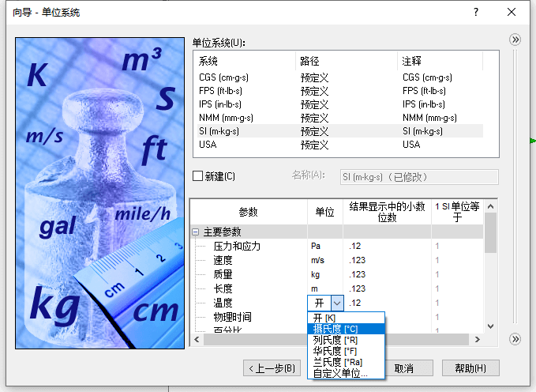
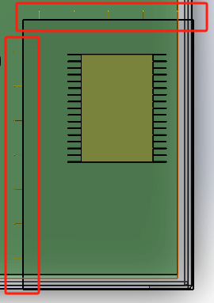

EFD缩放计算
学习EFD缩放计算求解复杂模型，对局部区域做更精确的计算。这里和SOLIDWORKS Simulation的子模型功能有些类似；
前面课程3《热分析》，我们已经对模型进行的散热的模拟分析；
课程6模型对散热器模型做了简化处理（如图），复杂计算部分会交由EFD的模型计算
查看结果
我们先看下复杂模型装配体的分析情况：
配置1
创建项目
选择配置，
研究在散热器不同摆放的配置下，散热器的效果
计算域
修改计算域只应用在散热器附近
调入边界条件
让我们从原本的仿真结果调入到现在的计算域项目中
选择“结果文件”，并浏览到本课程的1.fld结果文件，
选择环境，即导入全部的边界条件

导入后，刚刚选择的“X轴负方向边界”和“Z轴负方向边界”在模型会有箭头出现。
固体材料
散热器材料
PCB板也在计算域内，也添加下材料
热源
添加热源

计算
这里设置完成，计算稍等配置2项目一起【批量计算】
配置2
针对散热器不同摆放的效果，我们会有配置2进行验证。项目
克隆
因为边界条件等参数定义基本一致，这里可以使用克隆项目，复制出配置2的仿真
计算结果
查看结果
切面图
比较结果
图像比较
最值比较